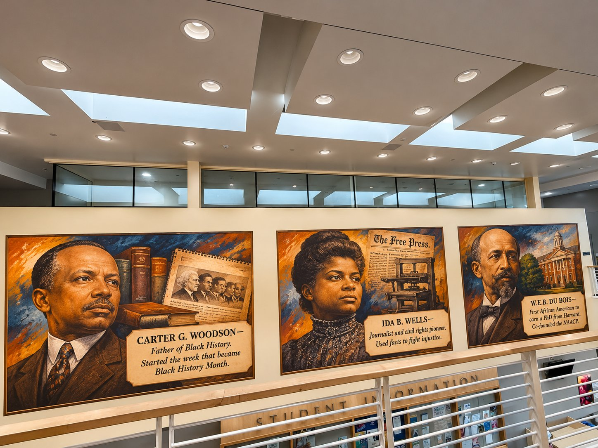
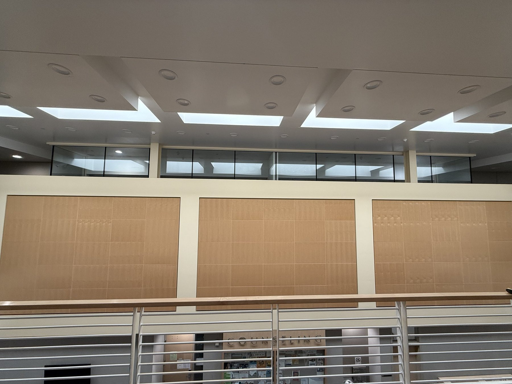
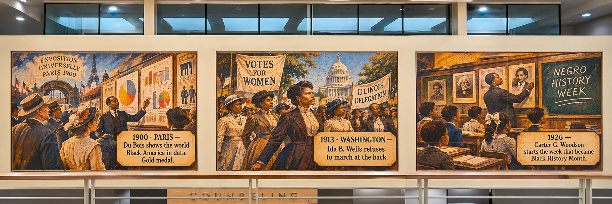

Six painted panels on the two walls above Student Information and Counseling. One side shows the people, the other shows the moments that made them history.

TODAYWITH MURALCarter G. Woodson, Ida B. Wells and W.E.B. Du Bois. Each portrait has a caption plaque that says in one line what they gave the world.


TODAYWITH MURALRead left to right like a timeline: 1900, Du Bois shows Black America in data at the Paris World's Fair. 1913, Ida B. Wells refuses to march at the back of the suffrage parade. 1926, Carter G. Woodson starts the week that became Black History Month.
#D69045#8E5129#34251E#E8D2B0#3D5A86Painterly brushstrokes with a vintage, sepia-warm feel, like an old photograph come to life. The same palette and plaque style run across all six panels, so both walls read as one series and sit naturally next to the maple wood and cream walls of the building.
Three portraits and three historical scenes, about 11 × 11 ft each.
Painted on rigid panels cut to each frame, so the acoustic wood stays untouched.
Professional acrylics with a UV-protective clear coat. Sketch approval before painting.